HFUT MC社区的大部分活动和服务器均使用Littleskin登录.
本文介绍了注册Littleskin账号, 以及PCL/HMCL/Prism启动器如何使用Littleskin登录.
国内访问加载图片可能会比较慢. 如果图片加载不出来, 请多等等, 或挂梯子.
注册成功后进入仪表盘, 创建自己的角色即可. 角色名字就是游戏名.
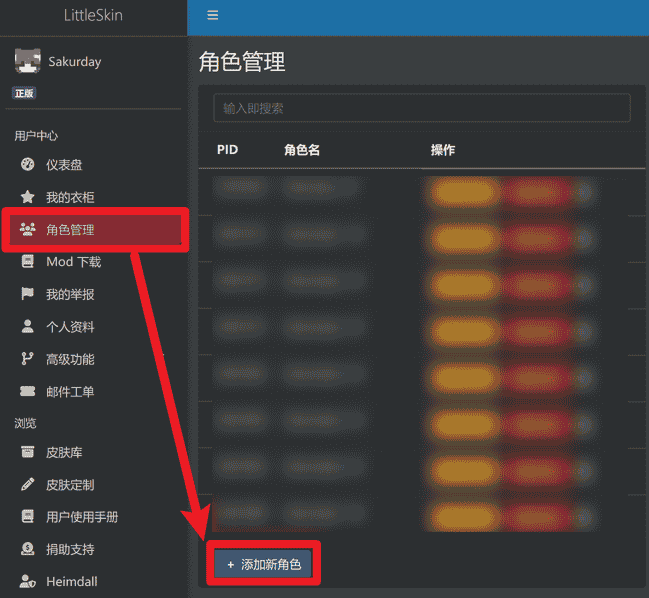
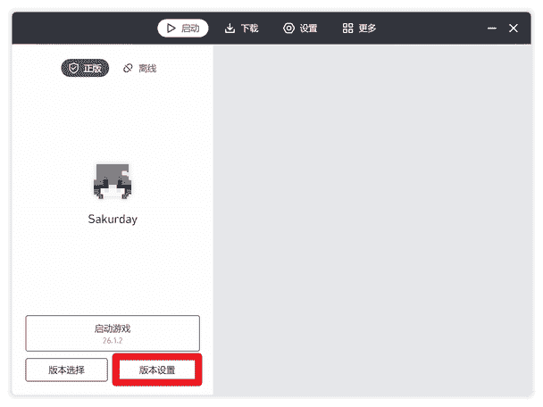
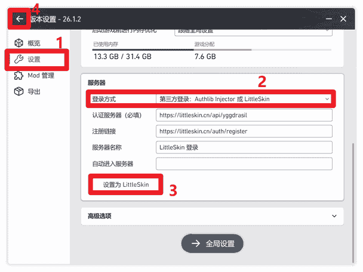
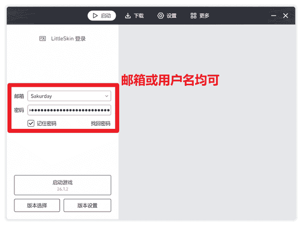
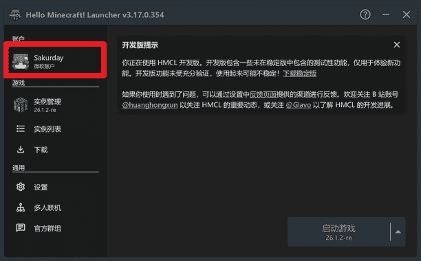
https://littleskin.cn/api/yggdrasil
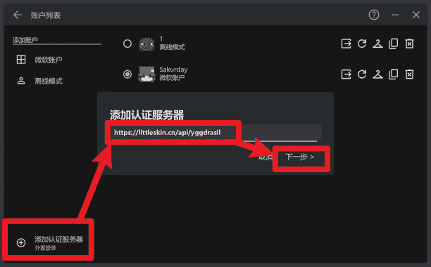
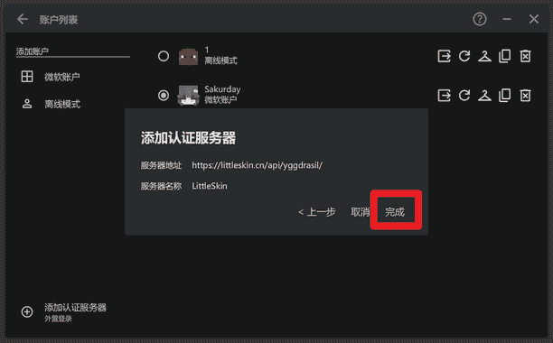
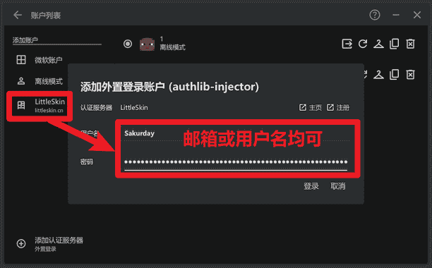
下载模组Littleskin Switcher并安装
Prism启动器默认只能用正版登录, 保持你的正版登录即可. 接下来启动游戏, 进入多人游戏界面
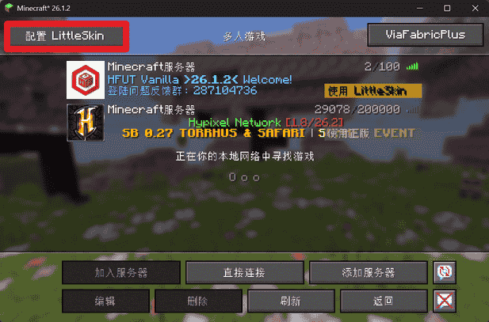
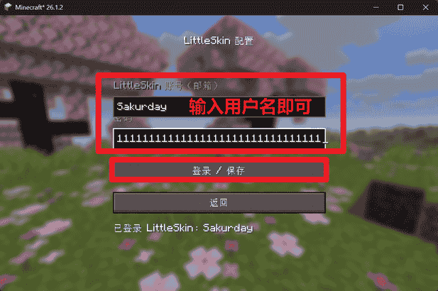
然后点击服务器列表的按钮切换到LittleSkin
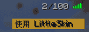
然后进入服务器
此模组由我开发. 如果你发现此模组已经跟不上HFUT原版服的版本了, 请联系我更新. 我不会将模组适配HFUT原版服以外的版本. 如果需要玩其他版本, 请考虑使用PCL或HMCL启动器.